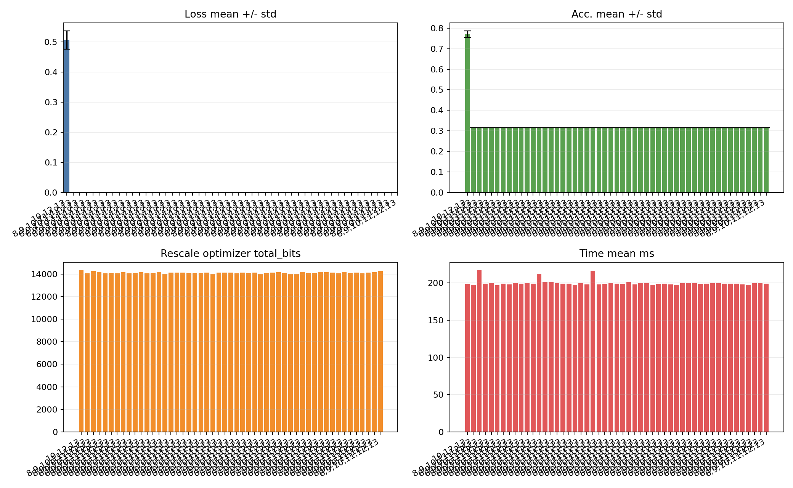

Stage2 RL 当前结果摘要
生成时间：2026-05-18；这是 fresh 重跑前归档的上一轮结果。代码未修改，只整理训练/评估产物。
关键结论
训练进度
5999 / 6000
Best Reward
-117.982140
Best Episode
5666
Invalid Steps 总数
0
PPO Updates
100
最近 50 回合均值
-125.5488
Final Eval 摘要
ActionSelected Acc Mean
0.7709
ActionSelected F1 Mean
0.7735
ActionSelected Loss Mean
0.5058
Total Bits
14329
Fusion
5
Final eval markdown 显示 ActionSelected: Acc mean 0.770882, F1 mean 0.773453, total bits 14329, fusion 5。Random baselines 多数塌到 Acc 0.316176。

文件位置
| 类型 | 路径 |
|---|---|
| 训练报告 | Parting Chapter/persistent/rl/bert-base/mrpc/s1t0.005_s2t0.005_s2st0.005/stage2_noise/progress/blb_stage2_report.md |
| 诊断摘要 | Parting Chapter/persistent/rl/bert-base/mrpc/s1t0.005_s2t0.005_s2st0.005/stage2_noise/progress/diagnostics/diagnostics_summary.md |
| Final Eval 报告 | Paean/outputs/mrpc/rl/s1t0.005_s2t0.005_s2st0.005/final_eval/blb_action_final_eval_report_mrpc.md |
| Best Action | Parting Chapter/persistent/rl/bert-base/mrpc/s1t0.005_s2t0.005_s2st0.005/stage2_noise/progress/diagnostics/best_action_vec.json |
| 本 HTML | reports/stage2_rl/completed_runs/2026-05-18_stage2_rl_pre_dynamic_stab/report.html |
训练报告摘录
# BLB Stage 2 RL 训练报告（最终版） - 运行名（run_basename）: `s1t0.005_s2t0.005_s2st0.005` - Profile（数据集）: `mrpc` - 生成时间: 2026-05-18T07:20:45.302113 - 训练时长: 28208.0 秒（约 470.1 分钟） - Episode 进度: 6000 / 6000 - 模数链 invoker: `in_process_real` ## 1. Reward 概览 - 最优 reward (best): **-117.982140** - 全程 episode reward 均值: -140.5932 - 全程 episode reward 最大值: -117.9821 - 全程 episode reward 最小值: -213.0960 - 全程 episode reward 标准差: 25.6179 ## 3. Baseline（全 max action）对照 | 字段 | 值 | |------|------| | `total_bits_sum` | 14779 | | `total_fusion_count` | 0 | | `avg_k` | 11.779661016949152 | | `loss_mean` | 0.3413879871368408 | | `metric1_mean` | 0.875 | | `metric2_mean` | 0.875 | ## 4. Reward 权重 | 字段 | 值 | |------|------| | `w_bits` | 0.03333333333333333 | | `w_fusion` | 1.0 | | `w_k` | 1.0 | ## 5. 最优 action：选了什么 SF / K（人类视图） 完整的逐槽位明细在 `blb_stage2_best_action_full.md` （人类阅读）和 `blb_stage2_best_action_full.json` （可直接喂给 `Paean/run_final_eval.sh --action-config`）。下面只列出与 baseline 不同的槽位。 ### 5.1 Best action · 按层 / block 选择概览 | 层 | block | 槽位选择 | |---|---|---| | L00 | B1 | F.gelu_out=22, W.wffn2=12, S.mean_inv_d=16, S.var_inv_d=16, R.mean_r=off, R.var_r=off, K=**8** | | L00 | B2 | F.inv_std_fresh=23, F.x_centered_fresh=22, M.gamma=18, W.wk=14, W.wv=22, M.kt_mask1=13, M.kt_mask2=13, M.qkt_merge_mask=11, R.gamma_r=off, R.kt_mask2_r=31, R.qkt_merge_mask_r=28, K=**10** | | L00 | B3 | F.x_fresh=19, S.inv_2n=12, R.sq0=30, R.sq1=off, R.sq2=31, R.sq3=27, K=**12** | | L00 | B4 | F.softmax_out_fresh=27, F.v_fresh=22, M.softmax_out_mask=12, M.v_mask=10, M.softmax_v_mask=12, S.ln_mean_inv_d=18, S.ln_var_inv_d=18, W.wo=22, R.softmax_v_matmul_r=off, R.ln_mean_r=31, R.ln_var_r=28, K=**10** | | L00 | B5 | F.inv_std_fresh=30, F.x_centered_fresh=30, M.gamma=20, W.wffn1=22, M.gelu_coeff=20, R.normalize_r=off, R.gamma_r=30, R.wffn1_r=off, R.gp0=off, K=**13** | | L01 | B1 | F.gelu_out=30, W.wffn2=20, S.mean_inv_d=20, S.var_inv_d=20, R.mean_r=34, R.var_r=34, K=**13** | | L01 | B2 | F.inv_std_fresh=23, F.x_centered_fresh=22, M.gamma=18, W.wk=14, W.wv=22, M.kt_mask1=13, M.kt_mask2=13, M.qkt_merge_mask=11, R.gamma_r=off, R.kt_mask2_r=31, R.qkt_merge_mask_r=28, K=**10** | | L01 | B3 | F.x_fresh=19, S.inv_2n=12, R.sq0=30, R.sq1=off, R.sq2=31, R.sq3=27, K=**12** | | L01 | B4 | F.softmax_out_fresh=27, F.v_fresh=22, M.softmax_out_mask=12, M.v_mask=10, M.softmax_v_mask=12, S.ln_mean_inv_d=18, S.ln_var_inv_d=18, W.wo=22, R.softmax_v_matmul_r=off, R.ln_mean_r=31, R.ln_var_r=24, K=**10** | | L01 | B5 | F.inv_std_fresh=30, F.x_centered_fresh=30, M.gamma=20, W.wffn1=22, M.gelu_coeff=20, R.normalize_r=off, R.gamma_r=30, R.wffn1_r=off, R.gp0=off, K=**13** | | L02 | B1 | F.gelu_out=30, W.wffn2=20, S.mean_inv_d=20, S.var_inv_d=20, R.mean_r=34, R.var_r=34, K=**13** | | L02 | B2 | F.inv_std_fresh=23, F.x_centered_fresh=22, M.gamma=18, W.wk=14, W.wv=22, M.kt_mask1=13, M.kt_mask2=13, M.qkt_merge_mask=11, R.gamma_r=off, R.kt_mask2_r=31, R.qkt_merge_mask_r=28, K=**10** | | L02 | B3 | F.x_fresh=20, S.inv_2n=11, R.sq0=31, R.sq1=off, R.sq2=27, R.sq3=27, K=**12** | | L02 | B4 | F.softmax_out_fresh=27, F.v_fresh=22, M.softmax_out_mask=12, M.v_mask=10, M.softmax_v_mask=10, S.ln_mean_inv_d=18, S.ln_var_inv_d=18, W.wo=22, R.softmax_v_matmul_r=off, R.ln_mean_r=31, R.ln_var_r=28, K=**10** | | L02 | B5 | F.inv_std_fresh=30, F.x_centered_fresh=30, M.gamma=20, W.wffn1=22, M.gelu_coeff=20, R.normalize_r=off, R.gamma_r=30, R.wffn1_r=off, R.gp0=off, K=**13** | | L03 | B1 | F.gelu_out=30, W.wffn2=20, S.mean_inv_d=20, S.var_inv_d=20, R.mean_r=34, R.var_r=34, K=**13** | | L03 | B2 | F.inv_std_fresh=23, F.x_centered_fresh=22, M.gamma=18, W.wk=14, W.wv=22, M.kt_mask1=13, M.kt_mask2=13, M.qkt_merge_mask=11, R.gamma_r=off, R.kt_mask2_r=31, R.qkt_merge_mask_r=28, K=**10** | | L03 | B3 | F.x_fresh=28, S.inv_2n=15, R.sq0=31, R.sq1=31, R.sq2=31, R.sq3=31, K=**13** | | L03 | B4 | F.softmax_out_fresh=27, F.v_fresh=22, M.softmax_out_mask=12, M.v_mask=10, M.softmax_v_mask=12, S.ln_mean_inv_d=18, S.ln_var_inv_d=18, W.wo=22, R.softmax_v_matmul_r=off, R.ln_mean_r=31, R.ln_var_r=28, K=**10** | | L03 | B5 | F.inv_std_fresh=30, F.x_centered_fresh=30, M.gamma=20, W.wffn1=22, M.gelu_coeff=20, R.normalize_r=off, R.gamma_r=30, R.wffn1_r=off, R.gp0=off, K=**13** | | L04 | B1 | F.gelu_out=30, W.wffn2=20, S.mean_inv_d=20, S.var_inv_d=20, R.mean_r=34, R.var_r=34, K=**13** | | L04 | B2 | F.inv_std_fresh=23, F.x_centered_fresh=22, M.gamma=18, W.wk=14, W.wv=22, M.kt_mask1=13, M.kt_mask2=13, M.qkt_merge_mask=11, R.gamma_r=off, R.kt_mask2_r=31, R.qkt_merge_mask_r=28, K=**10** | | L04 | B3 | F.x_fresh=28, S.inv_2n=15, R.sq0=31, R.sq1=31, R.sq2=31, R.sq3=31, K=**13** | | L04 | B4 | F.softmax_out_fresh=27, F.v_fresh=22, M.softmax_out_mask=12, M.v_mask=10, M.softmax_v_mask=10, S.ln_mean_inv_d=18, S.ln_var_inv_d=18, W.wo=22, R.softmax_v_matmul_r=off, R.ln_mean_r=31, R.ln_var_r=24, K=**10** | | L04 | B5 | F.inv_std_fresh=30, F.x_centered_fresh=30, M.gamma=20, W.wffn1=22, M.gelu_coeff=20, R.normalize_r=off, R.gamma_r=30, R.wffn1_r=off, R.gp0=off, K=**13** | | L05 | B1 | F.gelu_out=30, W.wffn2=20, S.mean_inv_d=20, S.var_inv_d=20, R.mean_r=34, R.var_r=34, K=**13** | | L05 | B2 | F.inv_std_fresh=23, F.x_centered_fresh=22, M.gamma=18, W.wk=14, W.wv=22, M.kt_mask1=13, M.kt_mask2=13, M.qkt_merge_mask=11, R.gamma_r=off, R.kt_mask2_r=31, R.qkt_merge_mask_r=24, K=**10** | | L05 | B3 | F.x_fresh=27, S.inv_2n=16, R.sq0=34, R.sq1=34, R.sq2=off, R.sq3=off, K=**13** | | L05 | B4 | F.softmax_out_fresh=27, F.v_fresh=22, M.softmax_out_mask=12, M.v_mask=10, M.softmax_v_mask=10, S.ln_mean_inv_d=18, S.ln_var_inv_d=18, W.wo=22, R.softmax_v_matmul_r=off, R.ln_mean_r=31, R.ln_var_r=28, K=**10** | | L05 | B5 | F.inv_std_fresh=22, F.x_centered_fresh=23, M.gamma=18, W.wffn1=14, M.gelu_coeff=16, R.normalize_r=27, R.gamma_r=18, R.wffn1_r=31, R.gp0=off, K=**12** | | L06 | B1 | F.gelu_out=30, W.wffn2=20, S.mean_inv_d=20, S.var_inv_d=20, R.mean_r=34, R.var_r=34, K=**13** | | L06 | B2 | F.inv_std_fresh=23, F.x_centered_fresh=22, M.gamma=18, W.wk=14, ... [truncated in HTML summary; see source markdown for full report]
诊断摘要摘录
# BLB Stage-2 Sequential RL · 诊断汇总（diagnostics @ episode=6000） _更新时间: 2026-05-18 07:20:45_ · 累计用时: **7h50m08s** **Run meta**： - `profile` = `mrpc` - `fixed_label` = `Stage-1 config (json)` - `fixed_source` = `json` - `rl_variant` = `blb_v3_sequential` - `total_episodes_planned` = `6000` - `rollout_size` = `60` - `save_interval` = `200` - `ppo_lr` = `0.0002` - `ppo_clip_range` = `0.2` - `ppo_ent_coef` = `0.02` - `ppo_value_coef` = `0.5` - `invalid_penalty` = `1.0` - `cost_shaping_coeff` = `0.05` - `fusion_shaping_coeff` = `0.0` - `early_terminate_on_invalid` = `False` - `acc_threshold` = `0.86765625` - `stab_threshold` = `0.05` - `static_skeletons_archive` = `/var/tmp/root-home/Reinforcement-For-Robustness/Rescale_optimizer/configs/mrpc/static_skeletons_mrpc.json` ## 1. 训练进度（training progress） - 已完成回合数: **6000** - 最近 50 回合 mean return: **-125.5488** (min=-129.9109, max=-121.0003) - 最近 50 回合 mean terminal reward: **-122.7687** - 最近 50 回合 mean invalid 子步数: **0.00** / 59 - 训练期 best reward: **-117.9821** - 训练期 worst reward: **-213.0960** - PPO 更新次数: **100** - baseline avg_k (per-block 加权): **11.780** ## 2. 训练期 Top-20 candidates **说明**：按 total_reward 排序。每条候选的完整 SF / K 配置（按槽位标签）见 `top_candidates.jsonl` 的 `slots` 字段；下面摘要表只列指标。 | Rank | Episode | total_reward | terminal | per_step_sum | valid | invalid | total_bits | fusion | |-----:|--------:|-------------:|---------:|-------------:|------:|--------:|-----------:|-------:| | 1 | 5666 | -117.9821 | -115.2500 | -2.7321 | 59 | 0 | 14061 | 5 | | 2 | 5678 | -118.0023 | -115.2500 | -2.7523 | 59 | 0 | 14101 | 4 | | 3 | 1783 | -119.0195 | -116.5000 | -2.5195 | 59 | 0 | 13653 | 13 | | 4 | 5689 | -119.8608 | -117.1250 | -2.7358 | 59 | 0 | 14071 | 4 | | 5 | 5859 | -119.8808 | -117.1250 | -2.7558 | 59 | 0 | 14113 | 4 | | 6 | 3721 | -119.9347 | -117.4375 | -2.4972 | 59 | 0 | 13625 | 13 | | 7 | 3239 | -119.9548 | -117.4375 | -2.5173 | 59 | 0 | 13663 | 13 | | 8 | 2024 | -119.9566 | -117.4375 | -2.5191 | 59 | 0 | 13655 | 13 | | 9 | 5824 | -120.0663 | -117.2812 | -2.7851 | 59 | 0 | 14185 | 2 | | 10 | 4105 | -120.0940 | -117.5938 | -2.5003 | 59 | 0 | 13621 | 15 | | 11 | 2511 | -120.1190 | -117.5938 | -2.5252 | 59 | 0 | 13677 | 13 | | 12 | 2934 | -120.1232 | -117.5938 | -2.5295 | 59 | 0 | 13699 | 13 | | 13 | 4597 | -120.1842 | -117.5938 | -2.5905 | 59 | 0 | 13827 | 12 | | 14 | 4590 | -120.1862 | -117.5938 | -2.5925 | 59 | 0 | 13833 | 12 | | 15 | 3299 | -120.2828 | -117.7500 | -2.5328 | 59 | 0 | 13703 | 13 | | 16 | 2855 | -120.2886 | -117.7500 | -2.5386 | 59 | 0 | 13721 | 13 | | 17 | 5185 | -120.3231 | -117.5938 | -2.7294 | 59 | 0 | 14077 | 5 | | 18 | 5673 | -120.3333 | -117.5938 | -2.7396 | 59 | 0 | 14083 | 4 | | 19 | 5294 | -120.3407 | -117.5938 | -2.7469 | 59 | 0 | 14111 | 4 | | 20 | 5652 | -120.3490 | -117.5938 | -2.7552 | 59 | 0 | 14111 | 4 | ### 2.1 Best vs baseline 槽位 diff（哪些槽变了，变了多少） _共 244 个槽与 baseline 不同_（238 SF + 6 K） **Truncation K diffs**： | Slot | Baseline K | Best K | Δ | |:-----|----------:|------:|--:| | `L0.B1.K` | 13 | 8 | -5 | | `L0.B3.K` | 13 | 12 | -1 | | `L1.B3.K` | 13 | 12 | -1 | | `L10.B3.K` | 13 | 12 | -1 | | `L2.B3.K` | 13 | 12 | -1 | | `L5.B5.K` | 13 | 12 | -1 | **Scaling-factor diffs**（前 20 条按 |Δ| 降序）： | Slot | Kind | Baseline SF | Best SF | Δ | |:-----|:----:|------------:|--------:|--:| | `L0.B1.F.gelu_out` | F | 30 | 22 | -8 | | `L0.B1.W.wffn2` | W | 20 | 12 | -8 | | `L0.B2.F.inv_std_fresh` | F | 31 | 23 | -8 | | `L0.B2.F.x_centered_fresh` | F | 30 | 22 | -8 | | `L0.B2.W.wk` | W | 22 | 14 | -8 | | `L0.B3.F.x_fresh` | F | 27 | 19 | -8 | | `L0.B4.F.softmax_out_fresh` | F | 35 | 27 | -8 | | `L0.B4.F.v_fresh` | F | 30 | 22 | -8 | | `L1.B2.F.inv_std_fresh` | F | 31 | 23 | -8 | | `L1.B2.F.x_centered_fresh` | F | 30 | 22 | -8 | | `L1.B2.W.wk` | W | 22 | 14 | -8 | | `L1.B3.F.x_fresh` | F | 27 | 19 | -8 | | `L1.B4.F.softmax_out_fresh` | F | 35 | 27 | -8 | | `L1.B4.F.v_fresh` | F | 30 | 22 | -8 | | `L2.B2.F.inv_std_fresh` | F | 31 | 23 | -8 | | `L2.B2.F.x_centered_fresh` | F | 30 | 22 | -8 | | `L2.B2.W.wk` | W | 22 | 14 | -8 | | `L2.B3.F.x_fresh` | F | 28 | 20 | -8 | | `L2.B4.F.softmax_out_fresh` | F | 35 | 27 | -8 | | `L2.B4.F.v_fresh` | F | 30 | 22 | -8 | 完整 diff 在 `best_action_vec.json` 的 `diff_vs_baseline` 字段。 ## 3. First-invalid 频次（哪些 (layer, block) 最先翻车） _暂无 invalid 记录（所有 episode 完整通过）。_ ## 4. PPO 学习动态（最近 10 次更新） | Update | Eps | policy_loss | value_loss | entropy | clip_frac | win_mean_ret | win_mean_inv | |------:|----:|------------:|-----------:|--------:|----------:|-------------:|-------------:| | 91 | 5460 | +4054554.1993 | +0.8340 | +0.9839 | 0.743 | -125.0205 | 0.00 | | 92 | 5520 | +653919.1633 | +0.6331 | +0.7898 | 0.704 | -125.5584 | 0.00 | | 93 | 5580 | +0.1622 | +0.5615 | +0.5389 | 0.689 | -125.5588 | 0.00 | | 94 | 5640 | +96.0227 | +0.6122 | +0.7021 | 0.759 | -125.5380 | 0.00 | | 95 | 5700 | +526678.4430 | +4.0790 | +0.6497 | 0.702 | -128.6743 | 0.00 | | 96 | 5760 | +0.1951 | +0.7029 | +0.4736 | 0.707 | -125.5959 | 0.00 | | 97 | 5820 | +172014387.4526 | +1.0449 | +0.5160 | 0.695 | -125.5056 | 0.00 | | 98 | 5880 | +9367916.2280 | +1.6344 | +0.6923 | 0.808 | -125.7542 | 0.00 | | 99 | 5940 | +36379876206.1071 | +1.1099 | +0.8140 | 0.777 | -125.2785 | 0.00 | | 100 | 6000 | +0.2765 | +0.6556 | +0.8652 | 0.922 | -125.5354 | 0.00 | _Entropy 趋势：+8.6811 → +0.8652（下降（policy 在收敛））_ ## 5. 动作分布概览（哪些 slot 已经在按 baseline 取最大档） - **已收敛 slot**（top-1 占比 > 85%）：**295** / 577 - **未收敛 slot**：**282** / 577 已收敛 slot 示例（前 8 个）： - slot[000] → action_index=0 （占比 100.0%） - slot[001] → action_index=0 （占比 100.0%） - slot[002] → action_index=0 （占比 100.0%） - slot[003] → action_index=0 （占比 100.0%） - slot[004] → action_index=0 （占比 100.0%） - slot[005] → action_index=0 （占比 100.0%） - slot[006] → action_index=0 （占比 100.0%） - slot[008] → action_index=0 （占比 95.2%） 最分散 slot 示例（前 8 个）： - slot[091] entropy=1.234 (uniform≈1.792) - slot[187] entropy=1.233 (uniform≈1.792) - slot[331] entropy=1.230 (uniform≈1.792) - slot[23 ... [truncated in HTML summary; see source markdown for full report]
Final Eval 报告摘录
# BLB Action Final Evaluation Report - dataset: `mrpc` - split: `validation_full` - selected_source: `blb_action(stage1=json)` - repeat_n: `50` - rescale_optimizer: `in_process` - rescale_optimizer_root: `/var/tmp/root-home/Reinforcement-For-Robustness/Rescale_optimizer` - json: `/var/tmp/root-home/Reinforcement-For-Robustness/Paean/outputs/mrpc/rl/s1t0.005_s2t0.005_s2st0.005/final_eval/blb_action_final_eval_results_mrpc.json` ## Baseline - clean baseline loss: `0.380749` - clean baseline Acc.: `0.879902` - clean baseline F1: `0.877442` ## Group Comparison | group | truncation k | effective K positions | loss mean | loss std | Acc. mean | Acc. std | F1 mean | F1 std | time mean ms | total bits | fusion | model cfg verified | | --- | ---: | ---: | ---: | ---: | ---: | ---: | ---: | ---: | ---: | ---: | ---: | --- | | `ActionSelected` | 10,12,13 | 59 | 0.505817 | 0.030443 | 0.770882 | 0.015954 | 0.773453 | 0.015630 | 198.708 | 14329 | 5 | False | | `ActionRandom_001` | 8,9,10,11,12,13 | 59 | nan | nan | 0.316176 | 0.000000 | 0.151906 | 0.000000 | 197.590 | 14066 | 9 | False | | `ActionRandom_002` | 8,9,10,11,12,13 | 59 | nan | nan | 0.316176 | 0.000000 | 0.151906 | 0.000000 | 217.196 | 14246 | 9 | False | | `ActionRandom_003` | 8,9,10,11,12,13 | 59 | nan | nan | 0.316176 | 0.000000 | 0.151906 | 0.000000 | 199.159 | 14195 | 8 | False | | `ActionRandom_004` | 8,9,10,11,12,13 | 59 | nan | nan | 0.316176 | 0.000000 | 0.151906 | 0.000000 | 200.437 | 14071 | 11 | False | | `ActionRandom_005` | 8,9,10,11,12,13 | 59 | nan | nan | 0.316176 | 0.000000 | 0.151906 | 0.000000 | 197.122 | 14097 | 8 | False | | `ActionRandom_006` | 8,9,10,11,12,13 | 59 | nan | nan | 0.316176 | 0.000000 | 0.151906 | 0.000000 | 199.472 | 14060 | 7 | False | | `ActionRandom_007` | 8,9,10,11,12,13 | 59 | nan | nan | 0.316176 | 0.000000 | 0.151906 | 0.000000 | 198.117 | 14160 | 5 | False | | `ActionRandom_008` | 8,9,10,11,12,13 | 59 | nan | nan | 0.316176 | 0.000000 | 0.151906 | 0.000000 | 200.244 | 14053 | 9 | False | | `ActionRandom_009` | 8,9,10,11,12,13 | 59 | nan | nan | 0.316176 | 0.000000 | 0.151906 | 0.000000 | 199.036 | 14092 | 9 | False | | `ActionRandom_010` | 8,9,10,11,12,13 | 59 | nan | nan | 0.316176 | 0.000000 | 0.151906 | 0.000000 | 200.317 | 14143 | 7 | False | | `ActionRandom_011` | 8,9,10,11,12,13 | 59 | nan | nan | 0.316176 | 0.000000 | 0.151906 | 0.000000 | 199.471 | 14056 | 12 | False | | `ActionRandom_012` | 8,9,10,11,12,13 | 59 | nan | nan | 0.316176 | 0.000000 | 0.151906 | 0.000000 | 212.463 | 14087 | 9 | False | | `ActionRandom_013` | 8,9,10,11,12,13 | 59 | nan | nan | 0.316176 | 0.000000 | 0.151906 | 0.000000 | 201.518 | 14175 | 9 | False | | `ActionRandom_014` | 8,9,10,11,12,13 | 59 | nan | nan | 0.316176 | 0.000000 | 0.151906 | 0.000000 | 201.381 | 14022 | 8 | False | | `ActionRandom_015` | 8,9,10,11,12,13 | 59 | nan | nan | 0.316176 | 0.000000 | 0.151906 | 0.000000 | 199.614 | 14119 | 8 | False | | `ActionRandom_016` | 8,9,10,11,12,13 | 59 | nan | nan | 0.316176 | 0.000000 | 0.151906 | 0.000000 | 198.996 | 14112 | 10 | False | | `ActionRandom_017` | 8,9,10,11,12,13 | 59 | nan | nan | 0.316176 | 0.000000 | 0.151906 | 0.000000 | 199.023 | 14107 | 11 | False | | `ActionRandom_018` | 8,9,10,11,12,13 | 59 | nan | nan | 0.316176 | 0.000000 | 0.151906 | 0.000000 | 197.889 | 14082 | 10 | False | | `ActionRandom_019` | 8,9,10,11,12,13 | 59 | nan | nan | 0.316176 | 0.000000 | 0.151906 | 0.000000 | 199.838 | 14080 | 12 | False | | `ActionRandom_020` | 8,9,10,11,12,13 | 59 | nan | nan | 0.316176 | 0.000000 | 0.151906 | 0.000000 | 198.216 | 14101 | 7 | False | | `ActionRandom_021` | 8,9,10,11,12,13 | 59 | nan | nan | 0.316176 | 0.000000 | 0.151906 | 0.000000 | 216.497 | 14131 | 9 | False | | `ActionRandom_022` | 8,9,10,11,12,13 | 59 | nan | nan | 0.316176 | 0.000000 | 0.151906 | 0.000000 | 198.005 | 14023 | 9 | False | | `ActionRandom_023` | 8,9,10,11,12,13 | 59 | nan | nan | 0.316176 | 0.000000 | 0.151906 | 0.000000 | 198.860 | 14138 | 10 | False | | `ActionRandom_024` | 8,9,10,11,12,13 | 59 | nan | nan | 0.316176 | 0.000000 | 0.151906 | 0.000000 | 200.347 | 14137 | 9 | False | | `ActionRandom_025` | 8,9,10,11,12,13 | 59 | nan | nan | 0.316176 | 0.000000 | 0.151906 | 0.000000 | 199.446 | 14133 | 10 | False | | `ActionRandom_026` | 8,9,10,11,12,13 | 59 | nan | nan | 0.316176 | 0.000000 | 0.151906 | 0.000000 | 198.689 | 14067 | 10 | False | | `ActionRandom_027` | 8,9,10,11,12,13 | 59 | nan | nan | 0.316176 | 0.000000 | 0.151906 | 0.000000 | 201.300 | 14109 | 7 | False | | `ActionRandom_028` | 8,9,10,11,12,13 | 59 | nan | nan | 0.316176 | 0.000000 | 0.151906 | 0.000000 | 198.313 | 14089 | 11 | False | | `ActionRandom_029` | 8,9,10,11,12,13 | 59 | nan | nan | 0.316176 | 0.000000 | 0.151906 | 0.000000 | 200.399 | 14135 | 9 | False | | `ActionRandom_030` | 8,9,10,11,12,13 | 59 | nan | nan | 0.316176 | 0.000000 | 0.151906 | 0.000000 | 199.678 | 14022 | 9 | False | | `ActionRandom_031` | 8,9,10,11,12,13 | 59 | nan | nan | 0.316176 | 0.000000 | 0.151906 | 0.000000 | 197.864 | 14091 | 6 | False | | `ActionRandom_032` | 8,9,10,11,12,13 | 59 | nan | nan | 0.316176 | 0.000000 | 0.151906 | 0.000000 | 198.740 | 14119 | 9 | False | | `ActionRandom_033` | 8,9,10,11,12,13 | 59 | nan | nan | 0.316176 | 0.000000 | 0.151906 | 0.000000 | 199.426 | 14162 | 8 | False | | `ActionRandom_034` | 8,9,10,11,12,13 | 59 | nan | nan | 0.316176 | 0.000000 | 0.151906 | 0.000000 | 198.035 | 14086 | 9 | False | | `ActionRandom_035` | 8,9,10,11,12,13 | 59 | nan | nan | 0.316176 | 0.000000 | 0.151906 | 0.000000 | 197.738 | 14036 | 8 | False | | `ActionRandom_036` | 8,9,10,11,12,13 | 59 | nan | nan | 0.316176 | 0.000000 | 0.151906 | 0.000000 | 199.886 | 14034 | 7 | False | | `ActionRandom_037` | 8,9,10,11,12,13 | 59 | nan | nan | 0.316176 | 0.000000 | 0.151906 | 0.000000 | 200.001 | 14175 | 6 | False | | `ActionRandom_038` | 8,9,10,11,12,13 | 59 | nan | nan | 0.316176 | 0.000000 | 0.151906 | 0.000000 | 199.911 | 14093 | 6 | False | | `ActionR ... [truncated in HTML summary; see source markdown for full report]